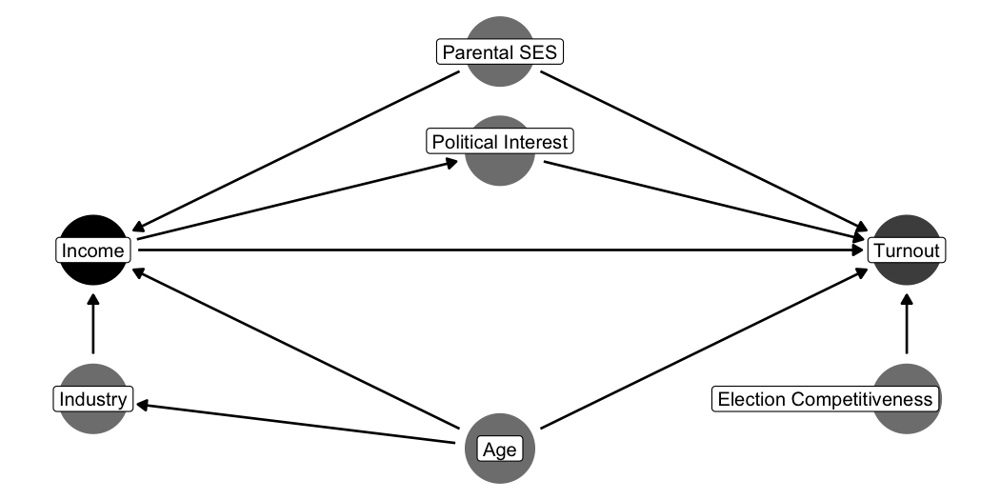
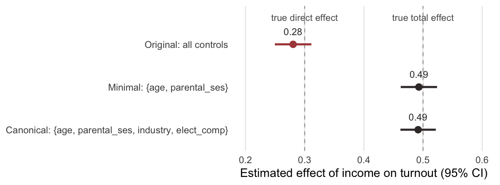
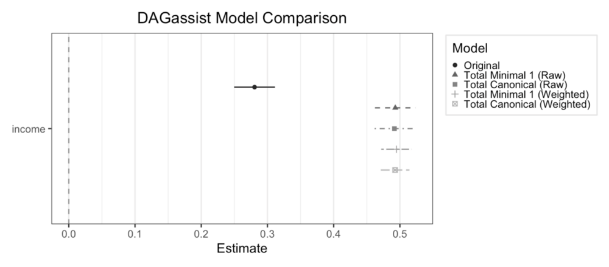

Adding a control variable can change what a regression estimates, not just how precisely it estimates it. Conditioning on mediators, colliders, or their descendants can shift the target estimand or introduce bias. However, researchers cannot infer these consequences from conventional regression output alone.
DAGassist reads your causal diagram (DAG) and your regression, flags the controls that shift the estimand, and re-fits the model with DAG-derived adjustment sets, so the number you report answers the question you asked.
Installation
You can install DAGassist with:
install.packages("DAGassist")You can also install the development version using devtools:
# install.packages("devtools")
devtools::install_github("grahamgoff/DAGassist")Example
Does higher income increase voter turnout? turnout_data is simulated from the DAG below, so the right answers are known. Income’s total effect is 0.50, of which 0.30 is direct and 0.20 runs through political interest.

A common approach is to control for everything available. Pass the DAG and that regression to DAGassist():
DAGassist(turnout_dag,
lm(turnout ~ income + parental_ses + age + polint + industry + elect_comp,
data = turnout_data),
show = "roles", type = "text", verbose = FALSE)| Variable | Role | Exp. | Out. | CON |
MED |
dConfOn | NCT |
NCO |
|---|---|---|---|---|---|---|---|---|
| age | confounder | x | ||||||
| elect_comp | nco | x | ||||||
| income | exposure | x | ||||||
| industry | nct | x | x | |||||
| parental_ses | confounder | x | ||||||
| polint | mediator | x | ||||||
| turnout | outcome | x |
polint is a mediator; it is one of the mechanisms through which income affects turnout. Thus, controlling for it makes the regression return the direct effect of income on turnout rather than the total effect. The Get started article defines each causal role in detail. Without show = "roles", DAGassist() also re-fits the model with the adjustment sets the DAG implies:
DAGassist(turnout_dag,
lm(turnout ~ income + parental_ses + age + polint + industry + elect_comp,
data = turnout_data),
show = "models", type = "text", verbose = FALSE)| Term | Original | Minimal 1 | Canonical |
|---|---|---|---|
| income | 0.281*** | 0.493*** | 0.492*** |
| (0.016) | (0.016) | (0.015) | |
| parental_ses | 0.331*** | 0.324*** | 0.332*** |
| (0.017) | (0.019) | (0.018) | |
| age | 0.275*** | 0.273*** | 0.267*** |
| (0.017) | (0.020) | (0.019) | |
| polint | 0.420*** | ||
| (0.014) | |||
| industry | -0.017 | -0.010 | |
| (0.015) | (0.016) | ||
| elect_comp | 0.500*** | 0.506*** | |
| (0.014) | (0.015) | ||
| Num.Obs. | 5000 | 5000 | 5000 |
| R2 | 0.596 | 0.423 | 0.525 |
- p-value legend: + < 0.1, * < 0.05, ** < 0.01, *** < 0.001.
- Controls (minimal): {age, parental_ses}.
- Controls (canonical): {age, elect_comp, industry, parental_ses}.
The original regression’s 0.28 is close to the direct effect (0.30). Both DAG-derived models recover the total effect. Without DAGassist, the researcher might present their model as estimating the total effect of income on voter turnout. DAGassist detects the estimand-shifting variable, and automatically reestimates with transparent estimands.

What else DAGassist does
-
Target an estimand explicitly.
estimand = "total"or"direct"re-estimates with weighting or sequential g-estimation. -
Stress-test the DAG.
pdag_robustness()checks arrows whose direction you’re unsure of;add_edges_robustness()checks arrows you may have left out. - Check that models are comparable. Balance diagnostics flag when listwise deletion changes who is in each model’s sample.
-
Work with your estimator.
lm,glm,fixest,lme4,estimatr, and most othery ~ xengines (supported engines). -
Export for papers and reviewers. Set
type =to write LaTeX, Word, Excel, plain-text, or dot-and-whisker output:
 LaTeX ( tabularray)
|
 Word |
 Excel |
 dotwhisker |
Citation
citation("DAGassist")
#> To cite package 'DAGassist' in publications use:
#>
#> Goff G, Denly M (2026). _DAGassist: Align Regressions with Target
#> Estimands_. R package version 0.3.1,
#> <https://grahamgoff.com/DAGassist/>.
#>
#> A BibTeX entry for LaTeX users is
#>
#> @Manual{,
#> title = {{DAGassist}: Align Regressions with Target Estimands},
#> author = {Graham Goff and Michael Denly},
#> year = {2026},
#> note = {R package version 0.3.1},
#> url = {https://grahamgoff.com/DAGassist/},
#> }